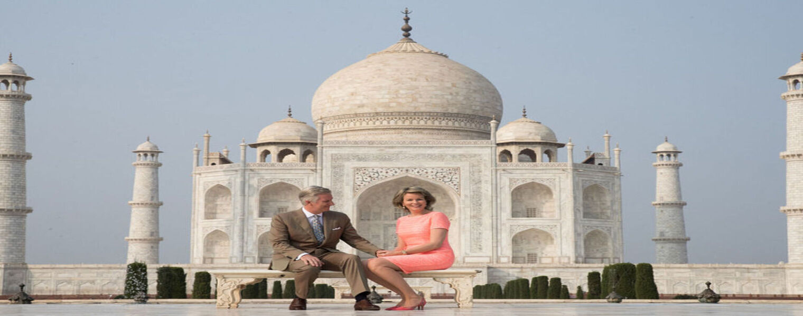

Il y a la beauté naturelle, oeuvre de mère nature, et la beauté artistique, enfantée par la main de l'homme. La beauté est subjective et non universelle, elle n'existe que pour celui qui regarde, qui lui apporte un jugement.
Bienvenue
La Liberté éclairant le monde plus connue sous le nom de statue de la Liberté (Statue of Liberty), est l'un des monuments les plus célèbres des États-Unis. Cette statue monumentale est située à New York, sur la Liberty Island, au sud de Manhattan, à l'embouchure de l'Hudson et à proximité d'Ellis Island.

Le Taj Mahal (en devanagari ताजमहल, en persan تاج محل qui signifie « la couronne du palais » mais ce nom peut aussi être vu comme une corruption de Mumtaz Mahal1) est situé à Agra, au bord de la rivière Yamuna, dans l'État de l'Uttar Pradesh, en Inde.